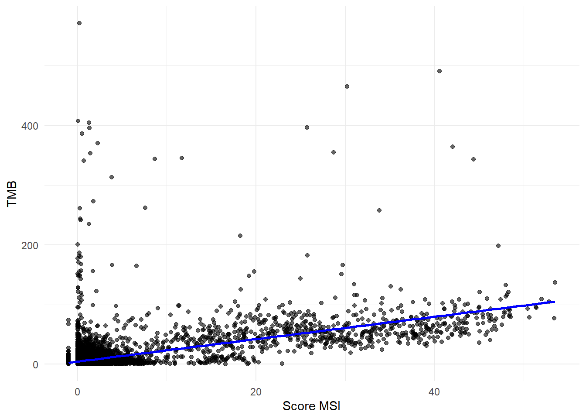
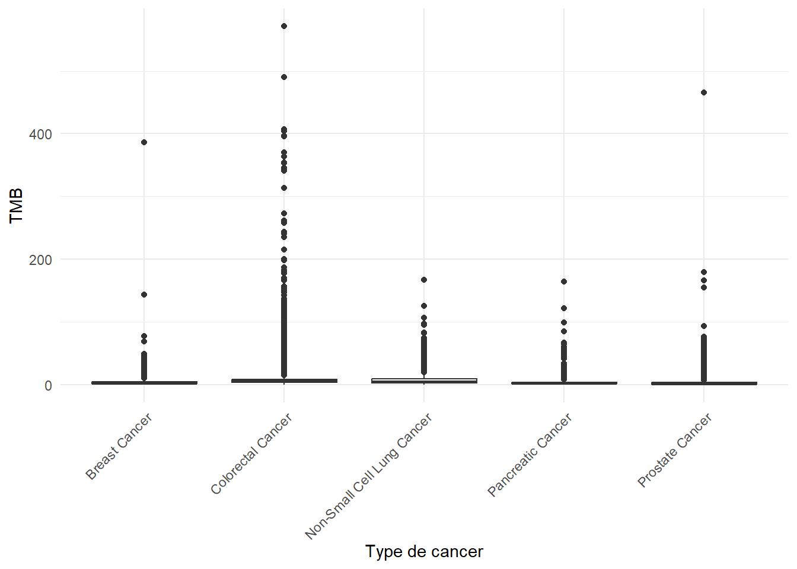
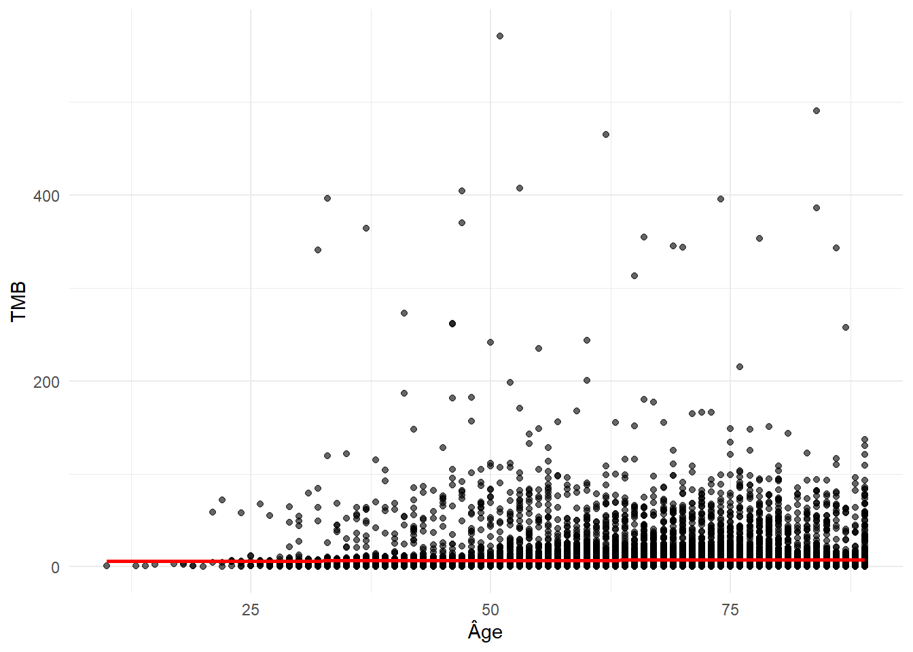

Partie 2 - Corrélations
L’objectif de cette deuxième partie est d’explorer les déterminants génomiques et cliniques du TMB (Tumor Mutational Burden), la charge mutationnelle des tumeurs.
On s’inspire ici des enjeux traitées dans ces articles : Smith, Parl, and Dupont (2023) Di Mauro et al. (2024). Les données sont issues de cet article : Jee et al. (2024).
Dans un premier modèle simple, seule la fraction du génome altéré est considérée : bien que la relation soit significative, elle explique très peu de la variance du TMB (R² ≈ 0,0015), cette variable seule n’est pas suffisante pour comprendre la variabilité observée.
En revanche, le modèle multiple incluant des variables cliniques (type de cancer, sexe, âge, tabagisme, score MSI) améliore fortement le pouvoir explicatif (R² ajusté ≈ 0,34).
Les résultats montrent que le MSI score est de loin le facteur le plus associé au TMB, suivi du type de cancer. La sélection par AIC confirme que l’âge n’apporte pas d’information supplémentaire. Soulignons tout de même la tendance visible sur le graphique.
En conclusion, le TMB apparaît comme un phénomène multifactoriel, fortement lié aux instabilités microsatellites et au contexte tumoral, et non pas réductible à une seule mesure génomique globale.
1. Modèle linéaire simple
lm1 <- lm(TMB..nonsynonymous. ~ Fraction.Genome.Altered, data = df)
summary(lm1)
Call:
lm(formula = TMB..nonsynonymous. ~ Fraction.Genome.Altered, data = df)
Residuals:
Min 1Q Median 3Q Max
-7.88 -5.15 -2.98 -0.18 563.26
Coefficients:
Estimate Std. Error t value Pr(>|t|)
(Intercept) 7.8768 0.1450 54.340 < 2e-16 ***
Fraction.Genome.Altered -3.4100 0.5603 -6.086 1.18e-09 ***
---
Signif. codes: 0 '***' 0.001 '**' 0.01 '*' 0.05 '.' 0.1 ' ' 1
Residual standard error: 16.39 on 24868 degrees of freedom
(170 observations deleted due to missingness)
Multiple R-squared: 0.001487, Adjusted R-squared: 0.001447
F-statistic: 37.04 on 1 and 24868 DF, p-value: 1.175e-092. Modèle multiple
lm2 <- lm(TMB..nonsynonymous. ~ Fraction.Genome.Altered + Cancer.Type + Sex + Current.Age + Smoking.History..NLP. + MSI.Score, data = df_lm2)
summary(lm2)
Call:
lm(formula = TMB..nonsynonymous. ~ Fraction.Genome.Altered +
Cancer.Type + Sex + Current.Age + Smoking.History..NLP. +
MSI.Score, data = df_lm2)
Residuals:
Min 1Q Median 3Q Max
-54.73 -3.20 -1.20 0.99 563.64
Coefficients:
Estimate Std. Error t value Pr(>|t|)
(Intercept) 4.640978 0.551474 8.416 < 2e-16 ***
Fraction.Genome.Altered -5.124054 0.493052 -10.393 < 2e-16 ***
Cancer.TypeColorectal Cancer 3.597590 0.300114 11.987 < 2e-16 ***
Cancer.TypeNon-Small Cell Lung Cancer 2.472888 0.286996 8.616 < 2e-16 ***
Cancer.TypePancreatic Cancer -0.835625 0.346466 -2.412 0.015879 *
Cancer.TypeProstate Cancer -1.866195 0.402734 -4.634 3.61e-06 ***
SexMale 0.789014 0.219912 3.588 0.000334 ***
Current.Age 0.003973 0.007749 0.513 0.608138
Smoking.History..NLP.Never -1.265172 0.195990 -6.455 1.10e-10 ***
Smoking.History..NLP.Unknown -0.459320 0.450634 -1.019 0.308083
MSI.Score 1.814029 0.018224 99.542 < 2e-16 ***
---
Signif. codes: 0 '***' 0.001 '**' 0.01 '*' 0.05 '.' 0.1 ' ' 1
Residual standard error: 13.67 on 23308 degrees of freedom
Multiple R-squared: 0.3402, Adjusted R-squared: 0.3399
F-statistic: 1202 on 10 and 23308 DF, p-value: < 2.2e-163. Sélection des variables les plus significatives
# Sélection de variables par AIC
step_aic <- stepAIC(lm2, direction = "both", trace = FALSE)
summary(step_aic)
Call:
lm(formula = TMB..nonsynonymous. ~ Fraction.Genome.Altered +
Cancer.Type + Sex + Smoking.History..NLP. + MSI.Score, data = df_lm2)
Residuals:
Min 1Q Median 3Q Max
-54.78 -3.21 -1.20 1.00 563.61
Coefficients:
Estimate Std. Error t value Pr(>|t|)
(Intercept) 4.88953 0.26294 18.596 < 2e-16 ***
Fraction.Genome.Altered -5.13629 0.49247 -10.430 < 2e-16 ***
Cancer.TypeColorectal Cancer 3.59712 0.30011 11.986 < 2e-16 ***
Cancer.TypeNon-Small Cell Lung Cancer 2.50873 0.27835 9.013 < 2e-16 ***
Cancer.TypePancreatic Cancer -0.80651 0.34177 -2.360 0.018295 *
Cancer.TypeProstate Cancer -1.82378 0.39414 -4.627 3.73e-06 ***
SexMale 0.78883 0.21991 3.587 0.000335 ***
Smoking.History..NLP.Never -1.27829 0.19431 -6.579 4.85e-11 ***
Smoking.History..NLP.Unknown -0.47103 0.45005 -1.047 0.295290
MSI.Score 1.81480 0.01816 99.924 < 2e-16 ***
---
Signif. codes: 0 '***' 0.001 '**' 0.01 '*' 0.05 '.' 0.1 ' ' 1
Residual standard error: 13.67 on 23309 degrees of freedom
Multiple R-squared: 0.3402, Adjusted R-squared: 0.3399
F-statistic: 1335 on 9 and 23309 DF, p-value: < 2.2e-16Graphiques pour détecter des tendances
TMB en fonction de MSI
ggplot(df, aes(x = MSI.Score, y = TMB..nonsynonymous.)) +
geom_point(alpha = 0.6) +
geom_smooth(method = "lm", se = TRUE, color = "blue") +
labs(
x = "Score MSI",
y = "TMB"
) +
theme_minimal()
TMB en fonction de Cancer Type
ggplot(df, aes(x = Cancer.Type, y = TMB..nonsynonymous.)) +
geom_boxplot() +
labs(
x = "Type de cancer",
y = "TMB"
) +
theme_minimal() +
theme(axis.text.x = element_text(angle = 45, hjust = 1))
TMB en fonction de l’âge
ggplot(df, aes(x = Current.Age, y = TMB..nonsynonymous.)) +
geom_point(alpha = 0.6) +
geom_smooth(method = "lm", se = TRUE, color = "red") +
labs(
x = "Âge",
y = "TMB"
) +
theme_minimal()